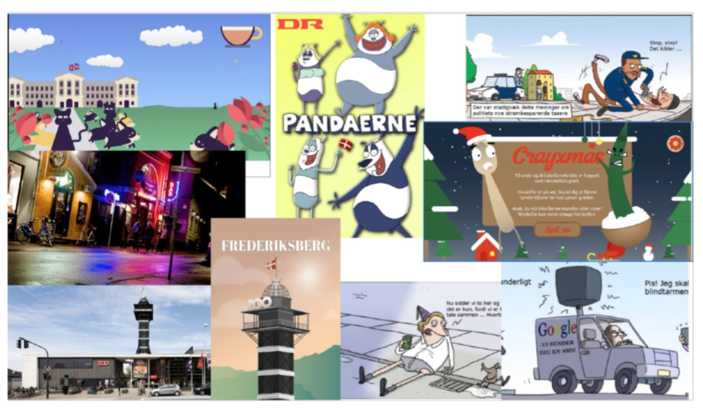
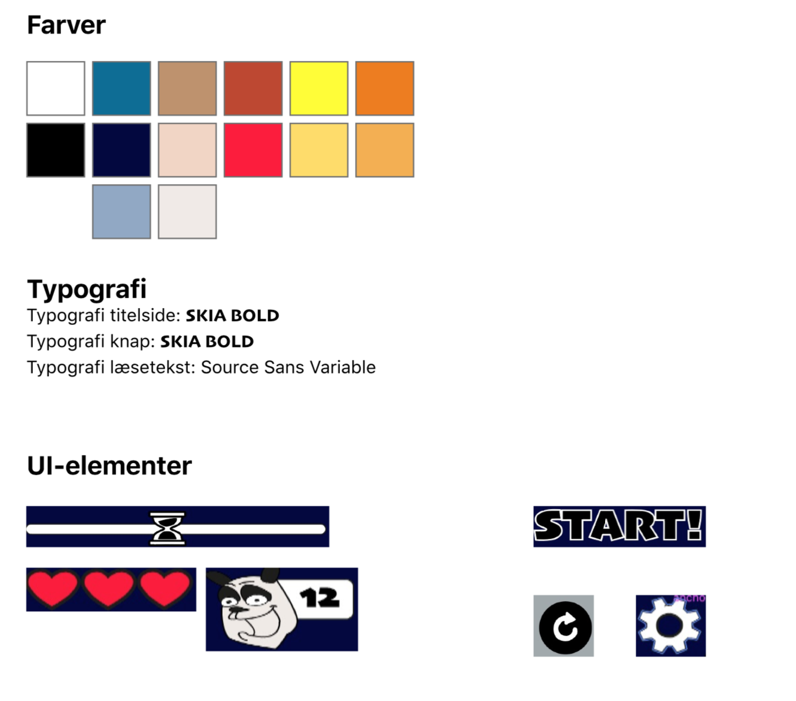
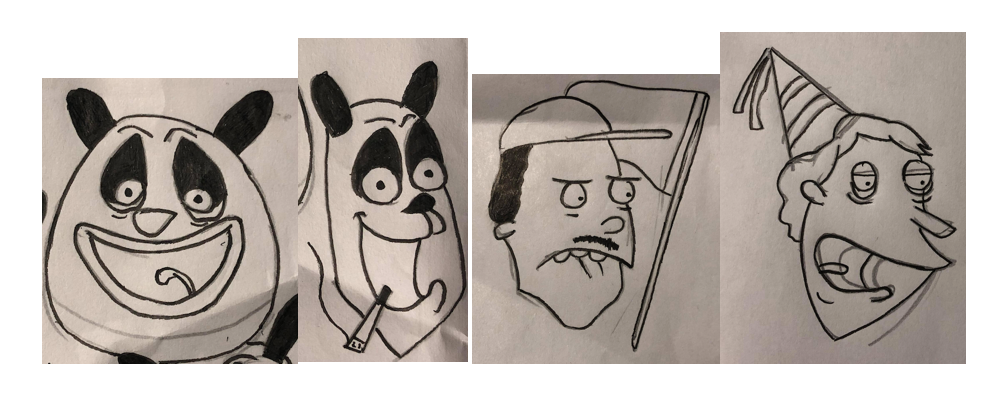
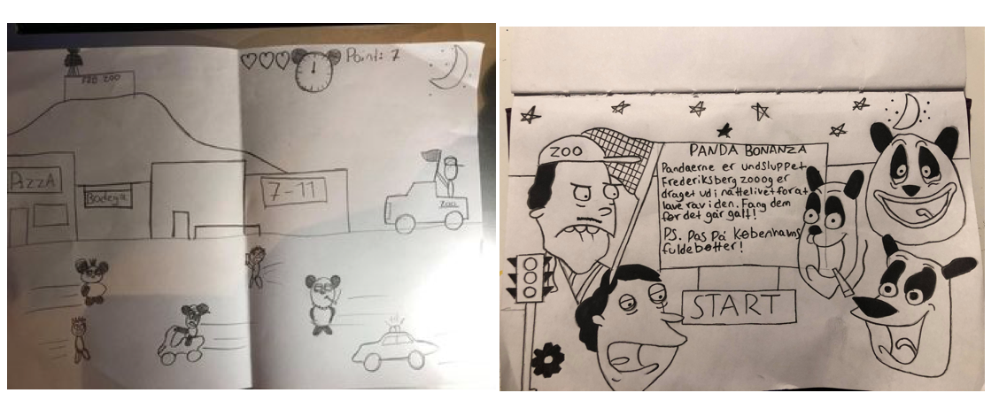
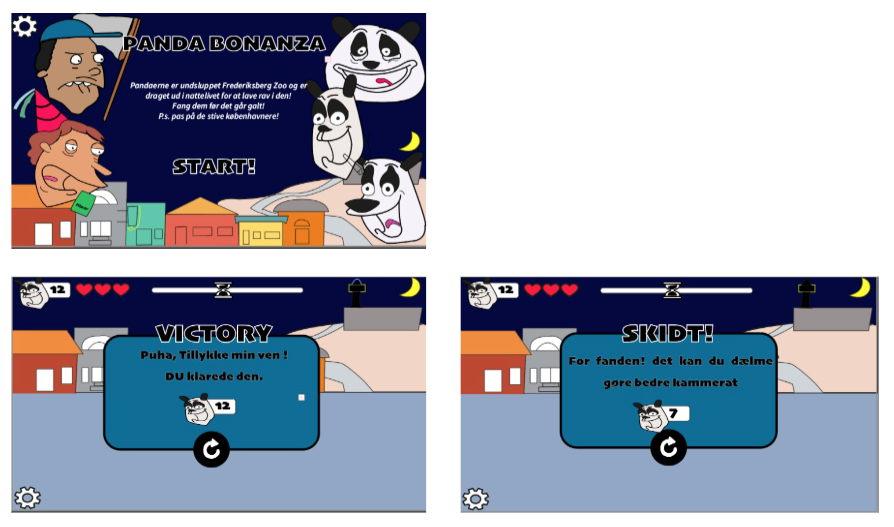
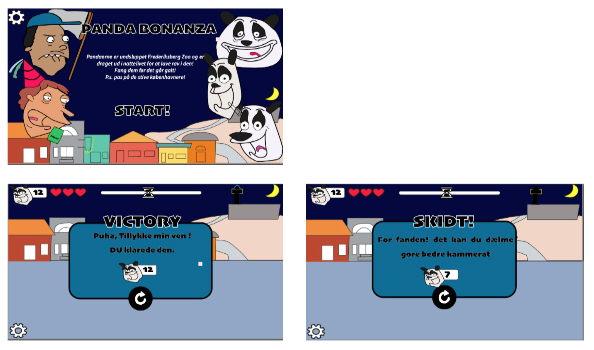

Animation - individuelt spil.
01.
I tema 4 - animation skulle vi programmere vores eget lille interaktive spil. Vi var både igennem en lang design process, hvor vi skulle udarbejde vores karakterer til spillet og visuelle stil og så programmeringsfasen. Jeg fik meget inspiration fra Pandaerne af wulf morgenthaler.
02. moodboard og styletile
 03. skitser
 04. rentegning i illustrator
 
